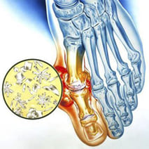
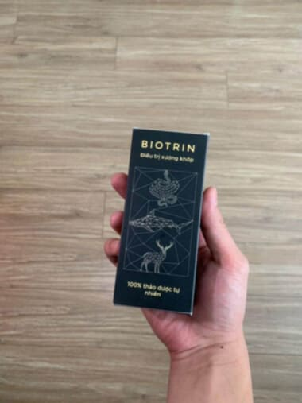

भारत सरकार government of india
World Health Organization
स्वास्थ्य मंत्रालय द्वारा प्रमाणित
80 साल की उम्र में भी स्वस्थ जोड़ों का रहस्य उजागर करने वाले भारतीय रुमेटोलॉजिस्ट
40 साल के बाद जोड़ों में दर्द क्यों शुरू होता है?
दर्द से कैसे बचें और सक्रियता को कैसे पुनः प्राप्त करें?
हम सभी ने कभी न कभी जोड़ों में दर्द का अनुभव किया है — चाहे वह शारीरिक परिश्रम के बाद हो या उम्र के कारण। लेकिन जब दर्द स्थायी साथी बन जाता है और सामान्य जीवन जीने में बाधा डालता है, तो क्या करें? इसका जवाब डॉ. विश्वनाथ शर्मा ने खोज लिया है। वे एक प्रसिद्ध भारतीय रुमेटोलॉजिस्ट हैं, जिनके पास 50 से अधिक वर्षों का अनुभव है।
80 साल की उम्र के बावजूद, डॉ. शर्मा आश्चर्यजनक रूप से सक्रिय जीवन जीते हैं। वे नियमित रूप से योग करते हैं, बहुत पैदल चलते हैं और जोड़ों में दर्द महसूस नहीं करते।
कुछ साल पहले, डॉ. शर्मा ने अपने जोड़ों के इलाज के लिए जर्मनी का दौरा किया था, जहाँ उन्हें स्थानीय उपचार विधियों से परिचित होने का मौका मिला। लेकिन जो उन्होंने वहाँ सीखा, उसने उन्हें चौंका दिया। आज हम उनका साक्षात्कार करेंगे और जानेंगे कि इस उम्र में उनकी असाधारण सक्रियता का रहस्य क्या है।
पत्रकार: डॉ. शर्मा, हमारे साथ बातचीत के लिए धन्यवाद। आपकी उम्र 80 वर्ष है, और आपके पास रुमेटोलॉजी में अद्भुत अनुभव है। कृपया हमें बताएं, आपका रहस्य क्या है? आप इस उम्र में इतनी सक्रियता कैसे बनाए रखते हैं, खेल करते हैं और अपने पोते-पोतियों के साथ समय बिताते हैं?
डॉ. विश्वनाथ शर्मा: नमस्कार! मेरी कहानी काफी व्यक्तिगत है। जब मेरी उम्र 40 के आसपास थी, तो मैंने खुद घुटनों के दर्द से पीड़ित होना शुरू कर दिया था। उस समय मैं एक सामान्य चिकित्सक के रूप में काम कर रहा था और पारंपरिक उपचार पद्धतियों का पालन करता था। डाइक्लोफेनाक लेता था, वोल्टरेन या फास्टम जैसी मलहम से जोड़ों को मलता था। दर्द कुछ घंटों के लिए कम हो जाता था, लेकिन फिर से वापस आ जाता था। समय के साथ समस्या और बढ़ने लगी – जोड़ों में सूजन आने लगी और चलना-फिरना कठिन हो गया।
पत्रकार: यह समस्या भारत में कई लोगों के लिए आम है। वह कौन सा मोड़ था जिसने सबकुछ बदल दिया?
डॉ. विश्वनाथ शर्मा: वहाँ इलाज के लिए आमंत्रित किया। और आप जानते हैं, वहाँ मुझे क्या देखने को मिला? एक पूरी तरह से अलग दृष्टिकोण। वहाँ दर्द निवारक दवाओं का उपयोग केवल आपातकालीन मामलों में किया जाता है, और वह भी अस्थायी रूप से। वे मुख्य कारण को खत्म करने पर ध्यान केंद्रित करते हैं — जोड़ों में जमा ऑर्थो-सॉल्ट्स। इसने मेरी आँखें खोल दीं।

पत्रकार: क्या आप समझा सकते हैं कि भारत में पारंपरिक उपचार पद्धतियों में क्या कमी है?
डॉ. विश्वनाथ शर्मा: समस्या यह है कि हम लक्षणों का इलाज करते हैं, बीमारी का नहीं। यहाँ व्यापक रूप से उपयोग की जाने वाली दवाएँ, जैसे नूरोफेन, डोलगिट, टेराफ्लेक्स, केवल दर्द और सूजन को कम करती हैं। लेकिन उसके बाद क्या होता है? दर्द वापस आ जाता है, क्योंकि मुख्य कारण — ऑर्थो-सॉल्ट्स का जमाव और रक्त प्रवाह में रुकावट — का समाधान नहीं किया गया है। भारत में उपचार मरीजों को विकलांग बना देता है। डॉक्टर और फार्मेसी मालिक महंगी दर्द निवारक दवाओं की बिक्री पर पैसा कमाते हैं, जो लोग सालों तक लेने को मजबूर हो जाते हैं।।
पत्रकार: और जर्मनी में इस समस्या का समाधान कैसे किया जाता है?
डॉ. विश्वनाथ शर्मा: जर्मनी में यह बात काफी पहले समझी जा चुकी है कि जोड़ों को "ठीक" किया जा सकता है, न कि सिर्फ "दबाया"। मुख्य ध्यान जोड़ों को ऑर्थो-सॉल्ट्स से साफ करने और रक्त संचार को बहाल करने पर दिया जाता है। जब यह हो जाता है, तो जोड़ों की मरम्मत खुद-ब-खुद शुरू हो जाती है, जैसे छिपकली की पूंछ। यह उन प्राकृतिक पुनर्जीवित प्रक्रियाओं के कारण संभव है, जो बीमारी के कारण को खत्म करने के बाद सक्रिय हो जाती हैं।
पत्रकार: डॉक्टर शर्मा, आपने उल्लेख किया कि जोड़ों की समस्याएँ ऑर्थो-सॉल्ट्स के जमाव से जुड़ी हो सकती हैं। इन्हें कैसे हटाया जा सकता है, और क्या विभिन्न जोड़ों की बीमारियों से पीड़ित रोगियों के लिए यह समाधान प्रभावी है?
डॉ. विश्वनाथ शर्मा: आप बिल्कुल सही कह रहे हैं, ऑर्थो-सॉल्ट्स का जमाव कई जोड़ों की बीमारियों, जैसे कि गठिया, ऑस्टियोआर्थराइटिस, बर्साइटिस और अन्य के लिए मुख्य कारण होता है। भारत में इन बीमारियों को अलग-अलग इलाज करने की कोशिश की जाती है, लेकिन यूरोप में इन सभी को "जोड़ों का कैल्सीनोसिस" नामक एक सामान्य शब्द के तहत शामिल किया गया है। यह बीमारियों का एक विस्तृत समूह है, जिसमें जोड़ों का उम्र बढ़ने के साथ कमजोर होना, चोटें, रक्त संचार की समस्या और अन्य कारक शामिल हैं।हम इस समस्या के समाधान की दिशा में लंबे समय से काम कर रहे हैं। यूरोप में केवल दर्द कम करने पर ही नहीं, बल्कि जोड़ों को इन हानिकारक जमावों से साफ करने पर ध्यान केंद्रित किया जाता है। इससे न केवल लक्षणों में राहत मिलती है, बल्कि बीमारी के विकास को भी रोका जा सकता है।।
पत्रकार: डॉक्टर शर्मा, आपने जोड़ों को साफ करने और रक्त संचार को पुनः स्थापित करने की महत्ता पर जोर दिया। भारत में, जहाँ पारंपरिक रूप से दर्द के लक्षणों का इलाज किया जाता है, इसे कैसे प्राप्त किया जा सकता है?
डॉ. विश्वनाथ शर्मा: यह कई भारतीयों के लिए एक महत्वपूर्ण सवाल है। वास्तव में, भारत में डॉक्टर अक्सर केवल दर्द को कम करने का प्रयास करते हैं, बिना समस्या की जड़ को ठीक किए। लेकिन आजकल हमारे पास ऐसा समाधान है जो केवल दर्द को दबाने के बजाय जोड़ों को पुनः स्थापित करता है। यह प्राकृतिक तत्वों के अनोखे शोध और विकास के कारण संभव हुआ है। ऐसा ही एक उत्पाद है Biotrin। यह उपाय यूरोप के प्रमुख विशेषज्ञों और डॉक्टरों के सहयोग से विकसित किया गया है, जहाँ 50 से अधिक प्राकृतिक तत्वों के आधार पर एक अनोखा फॉर्मूला तैयार किया गया है। यह फॉर्मूला जोड़ों को ऑर्थो-सॉल्ट्स से साफ करने के लिए डिज़ाइन किया गया है।

पत्रकार: और Biotrin बाजार में मौजूद अन्य उत्पादों की तुलना में क्या विशेषताएँ प्रदान करता है?
डॉ. विश्वनाथ शर्मा: Biotrin केवल अस्थायी रूप से दर्द को कम नहीं करता, बल्कि अपने प्राकृतिक संघटन की वजह से जोड़ों की कार्यक्षमता को बहाल करता है। इसमें एक विशेष क्वासिविटामिन B और पौधों के अर्क होते हैं, जो ऑर्थो-सॉल्ट्स में गहराई से प्रवेश करके उन्हें तोड़ते हैं और जोड़ों को साफ करते हैं। इस प्रक्रिया से रक्त संचार सामान्य हो जाता है, साइनोवियल फ्लूड का प्रवाह बहाल होता है, और जोड़ों की स्वाभाविक रूप से पुनर्जीवन प्रक्रिया शुरू होती है
यह एक पूरी तरह से सुरक्षित उत्पाद है, जिसे पर्यावरणीय रूप से शुद्ध सामग्रियों से बनाया गया है। यह शरीर को कोई नुकसान नहीं पहुँचाता और लंबे समय तक उपयोग करने के लिए भी सुरक्षित है। Biotrin न केवल प्रभावी है बल्कि इसके परिणाम लंबे समय तक रहते हैं, जिससे दर्द में स्थायी राहत और जोड़ों की स्थिति में सुधार होता है, यहाँ तक कि उपचार समाप्त होने के बाद भी
पत्रकार: यह बहुत प्रभावशाली लगता है। वास्तविक जीवन में Biotrin कैसे काम करता है? क्या इस दवा का उपयोग करने वाले लोगों के परिणाम हैं?
डॉ. विश्वनाथ शर्मा: बेशक। मेरे एक सबसे यादगार मरीज, जो एक 65 वर्षीय इंजीनियर थे, गठिया से पीड़ित थे। वह लगभग चल भी नहीं पाते थे। उन्होंने हर चीज़ आजमाई – मालिश, दर्द निवारक दवाएँ, और इंजेक्शन पर ढेर सारा पैसा खर्च किया। Biotrin का एक महीने तक उपयोग करने के बाद, वह आराम से चलने लगे, और तीन महीने बाद सीढ़ियाँ बिना दर्द के चढ़ने लगे। Biotrin का उपयोग करने वाले कई रोगियों ने जोड़ों के दर्द में उल्लेखनीय कमी और उनकी गतिशीलता में सुधार का अनुभव किया है। सबसे महत्वपूर्ण बात यह है कि Biotrin दर्द निवारक दवाओं को भूलने में मदद करता है, क्योंकि यह केवल लक्षणों पर ही नहीं, बल्कि उनके कारणों पर भी काम करता है। अन्य उत्पादों की तुलना में, यह बहुत ही कोमलता से काम करता है और कोई साइड इफेक्ट नहीं करता।
पत्रकार: अधिकतम प्रभाव प्राप्त करने के लिए इस दवा का उपयोग कैसे किया जा सकता है?
डॉ. विश्वनाथ शर्मा: वास्तविक परिणाम देखने के लिए Biotrin का 4-6 सप्ताह तक उपयोग करने की सलाह देता हूँ। इसे प्रभावित क्षेत्र पर दिन में दो बार लगाएँ – यह ऑर्थो-सॉल्ट्स को प्रभावी ढंग से साफ करने और सामान्य रक्त संचार बनाए रखने में मदद करेगा। कुछ ही हफ्तों में आप दर्द में महत्वपूर्ण राहत महसूस करेंगे। यदि आप जोड़ों की दीर्घकालिक देखभाल करना चाहते हैं, तो हर साल कुछ कोर्स पूरे करना सलाहनीय है, ताकि जोड़ों को लंबे समय तक स्वस्थ स्थिति में रखा जा सके

पहले परिणाम केवल 4 हफ्तों में महसूस करें Biotrin का उपयोग करके!
पत्रकार: आपने उल्लेख किया कि Biotrin डॉक्टरों के साथ मिलकर विकसित किया गया है क्या इस उत्पाद पर भरोसा किया जा सकता है?
डॉ. विश्वनाथ शर्मा: बिल्कुल! हमारी सभी शोध यूरोप के बेहतरीन रुमेटोलॉजी विशेषज्ञों के साथ मिलकर की गई हैं। इस उत्पाद ने कई क्लिनिकल परीक्षण पास किए हैं, जिन्होंने इसकी प्रभावशीलता और सुरक्षा की पुष्टि की है। हम पूरी विश्वास के साथ कह सकते हैं कि Biotrin न केवल प्रभावी है, बल्कि यह एक विश्वसनीय और सुरक्षित उपाय है जोड़ों के दर्द के इलाज के लिए
पत्रकार: Biotrin कहाँ से खरीदा जा सकता है?
डॉ. विश्वनाथ शर्मा: यह उत्पाद केवल इस आधिकारिक वेबसाइट पर उपलब्ध है। यह सुनिश्चित करता है कि आपको केवल असली उत्पाद मिलेगा, नकली नहीं
पत्रकार: जो लोग अपने जोड़ों को स्वस्थ रखना चाहते हैं, उनके लिए आपका क्या सुझाव है?
डॉ. विश्वनाथ शर्मा: कभी भी इंतजार न करें कि स्थिति खराब हो जाए। अपने जोड़ों की देखभाल अभी से शुरू करें: ज्यादा चलें, संतुलित भोजन करें और ऐसे उत्पादों का उपयोग करें जो उनके स्वास्थ्य का समर्थन करें, जैसे Biotrin।
पत्रकार: धन्यवाद, डॉ. विश्वनाथ शर्मा। आपका अनुभव प्रेरणादायक है! यह भारत में उन लोगों के लिए एक सच्चा समाधान है, जो जोड़ों के लिए प्रभावी और सुरक्षित इलाज की तलाश में हैं
डॉ. विश्वनाथ शर्मा: धन्यवाद। आपके जोड़ों हमेशा मजबूत रहें!
इको-फ्रेंडली प्रभावी प्रमाणित

यूरोप के प्रमुख डॉक्टरों की सिफारिशें:
डॉ. सोफी लेक्लेर, ऑर्थोपेड, फ्रांस
Biotrin ऑस्टियोआर्थराइटिस और आर्थराइटिस जैसी विभिन्न जोड़ों की बीमारियों के इलाज के लिए एक उत्कृष्ट उत्पाद है। मैंने अपने मरीजों पर इसके सकारात्मक प्रभाव देखे हैं। यह एक सुरक्षित, प्राकृतिक उत्पाद है जो जोड़ों को पुनर्स्थापित करता है, गतिशीलता में सुधार करता है और दर्द को कम करता है। मैं इसे अपने सभी जोड़ों की समस्याओं वाले मरीजों को सिफारिश करती हूं।
डॉ. एलेसेंड्रो कॉन्टी, ट्रॉमैटोलॉजिस्ट, इटली

Biotrin जोड़ों की सूजन और अपक्षयी बीमारियों के इलाज के लिए मेरी थेरेपी का अभिन्न हिस्सा बन गया है। इसके घटक, जैसे अल्फा-आर्थ्रोफेरोल और प्राकृतिक तत्व, प्रभावी रूप से लवण हटाते हैं और जोड़ों को पुनर्स्थापित करते हैं। मैं इसे नियमित रूप से अपने पुराने दर्द वाले मरीजों को सुझाता हूं और हमेशा सकारात्मक प्रतिक्रिया प्राप्त करता हूं।
Biotrin के अनुसंधान परिणाम
-
 92% प्रतिभागियों ने उपयोग के पहले सप्ताह में दर्द में महत्वपूर्ण कमी महसूस की।
92% प्रतिभागियों ने उपयोग के पहले सप्ताह में दर्द में महत्वपूर्ण कमी महसूस की।
-
91% मरीजों ने 30 दिनों के भीतर जोड़ों की गतिशीलता में सुधार देखा
-
94% ने अपने संपूर्ण स्वास्थ्य में सुधार और जोड़ों की कड़कन के गायब होने की बात कही
डॉक्टर Biotrin क्यों सुझाते हैं?
-
 उपास्थि ऊतक को पुनर्स्थापित करता है यह 1 मिलियन से अधिक कोशिकाओं को सक्रिय करता है, जो जोड़ों के पुनरुद्धार के लिए जिम्मेदार हैं।
उपास्थि ऊतक को पुनर्स्थापित करता है यह 1 मिलियन से अधिक कोशिकाओं को सक्रिय करता है, जो जोड़ों के पुनरुद्धार के लिए जिम्मेदार हैं।
-
दर्द को खत्म करता है बायोकॉम्पोनेंट्स सूजन को जल्दी से कम करते हैं और असुविधा से छुटकारा दिलाते हैं
-
रक्त संचार में सुधार करता है यह पोषक तत्वों को जोड़ों तक पहुंचाने में मदद करता है और उनकी पुनर्बहाली को तेज करता है।
-
किसी भी उम्र के लिए उपयुक्त यह न केवल रोकथाम के लिए बल्कि जोड़ों की पुरानी बीमारियों के इलाज के लिए भी प्रभावी है।
ध्यान दीजिए!
Biotrin को सबसे कम कीमत पर ऑर्डर करने के लिए, पोस्ट किए गए डिस्काउंट रील के नीचे "स्पिन" बटन पर क्लिक करें!
आपको जो छूट मिलती है उसके आधार पर, आप उसी छूट के साथ Biotrin™ ऑर्डर कर पाएंगे

बधाई हो!
आपने अधिकतम छूट जीत ली है - 50%!
Biotrin आपके लिए आरक्षित है।
आपके पास अनुरोध छोड़ने के लिए 10 मिनट हैं।
Biotrin
आपकी 50% की वैयक्तिकृत छूट!
आपके लिए प्रोडक्ट की कीमत होगी - 100$
पदोन्नति समाप्त होगी: 00:00
(यदि आप निर्दिष्ट समय से पहले फॉर्म भरने में विफल रहते हैं,
तो आपकी बुकिंग किसी अन्य व्यक्ति को स्थानांतरित कर दी जाएगी क्योंकि उत्पाद बहुत दुर्लभ है)
घोषणा - Biotrin हमारी पंजीकृत ब्रांड है लेकिन कुछ लोग ऑनलाइन वेबसाइट पर Biotrin के नाम से भी बिक्री कर रहे हैं, जिस पर कानूनी कार्रवाई की जाएगी। यदि आप वैसी दवाई लेते हैं, तो हम किसी भी साइड इफेक्ट या परिणाम न मिलने के लिए हम उत्तरदायी नहीं होंगे।
वास्तविक ग्राहकों की समीक्षाएं:
आशा, 45 वर्ष, मुंबई:

मैं कई वर्षों से आर्थराइटिस से पीड़ित थी, और कोई भी दवा वांछित परिणाम नहीं दे रही थी। Biotrin के उपयोग के 3 हफ्तों के बाद, मैंने महत्वपूर्ण सुधार देखा। दर्द कम हो गया और जोड़ों की गतिशीलता लौट आई। अब मैं फिर से योग कर सकती हूं और दोस्तों के साथ घूमने जा सकती हूं।
 29
22.01.25
29
22.01.25
मडियार, 58 वर्ष, आगरा:
 44
22.01.25
44
22.01.25
रमेश, 60 वर्ष, दिल्ली:

हाल ही में मुझे घुटनों में ऑस्टियोआर्थराइटिस के कारण चलने में कठिनाई होने लगी थी। डॉक्टर की सलाह पर मैंने Biotrin आजमाया, और एक महीने के भीतर महसूस किया कि मेरे जोड़ों ने पुनर्स्थापन शुरू कर दिया। दर्द काफी कम हो गया, और अब मैं सीढ़ियां बिना परेशानी के चढ़ सकता हूं।
37
22.01.25
भावना, 63 वर्ष, वाराणसी:
 59
22.01.25
59
22.01.25
सोनल, 48 वर्ष, बेंगलुरु:
कई महीनों तक पीठ के दर्द से पीड़ित होने के बाद, मैंने Biotrin आजमाने का फैसला किया। शुरुआत में ज्यादा उम्मीद नहीं थी, लेकिन 2 हफ्तों के बाद दर्द लगभग गायब हो गया, और मैं फिर से सामान्य रूप से बैठकर काम कर सकती हूं। यह उत्पाद वास्तव में काम करता है, और मैंने इसे पहले ही कई दोस्तों को सिफारिश कर दिया है।
 38
22.01.25
38
22.01.25
अर्जुन, 50 वर्ष, कोलकाता:
मुझे कंधे के बर्साइटिस का निदान हुआ था, और लगातार दर्द ने सामान्य जीवन जीना मुश्किल कर दिया था। Biotrin के 3 हफ्तों के उपयोग के बाद मैंने उल्लेखनीय सुधार देखा। दर्द चला गया, और मैं बिना किसी बाधा के अपनी दैनिक जिम्मेदारियों पर लौट आया।
 51
22.01.25
51
22.01.25
ईशा, 58 वर्ष, चेन्नई:
मेरी मां रुमेटिज्म से पीड़ित थीं, और हमने कई उपाय आजमाए, लेकिन Biotrin एक वास्तविक बचाव साबित हुआ। उपयोग के एक महीने के भीतर उनका स्वास्थ्य काफी सुधर गया। वह फिर से सक्रिय हो गईं और जोड़ों के दर्द की शिकायत करना बंद कर दिया।
27
22.01.25
विन्दा, 71 वर्ष, सूरत:
50
22.01.25
गुरुदेव, 55 वर्ष, हैदराबाद:

मैं Biotrin के उपयोग के परिणाम से हैरान था। मुझे कोक्स-आर्थराइटिस के कारण घुटनों में तेज दर्द था। इस उत्पाद का उपयोग करने के बाद, दर्द काफी कम हो गया, और अब मैं लंबी सैर पर जा सकता हूं, जो पहले संभव नहीं था।
36
22.01.25
रीता, 42 वर्ष, पुणे:
Biotrin मेरी एक बड़ी खोज बन गया। मैं कई वर्षों से जोड़ों में सूजन से पीड़ित थी। उपयोग शुरू करने के कुछ ही समय बाद मुझे राहत महसूस हुई। जोड़ों की कठोरता कम हो गई, और दर्द लगभग गायब हो गया। अब मैं बिना किसी डर के खेलकूद कर सकती हूं।
41
22.01.25
डॉ. हैंस म्यूलर, रुमेटोलॉजिस्ट, जर्मनी
Biotrin एक प्रभावी उपाय है, जिसे मैं अपने जोड़ों की समस्याओं वाले मरीजों को सुझाता हूं। इसके प्राकृतिक घटक उपास्थि ऊतक को पुनर्स्थापित करने और सूजन को कम करने में मदद करते हैं। बाजार में उपलब्ध कई उत्पादों के विपरीत, Biotrin कोई साइड इफेक्ट नहीं करता और मरीजों द्वारा आसानी से सहन किया जाता है। मैं इसे अपनी प्रैक्टिस में उपयोग करता हूं और शानदार परिणाम देखता हूं